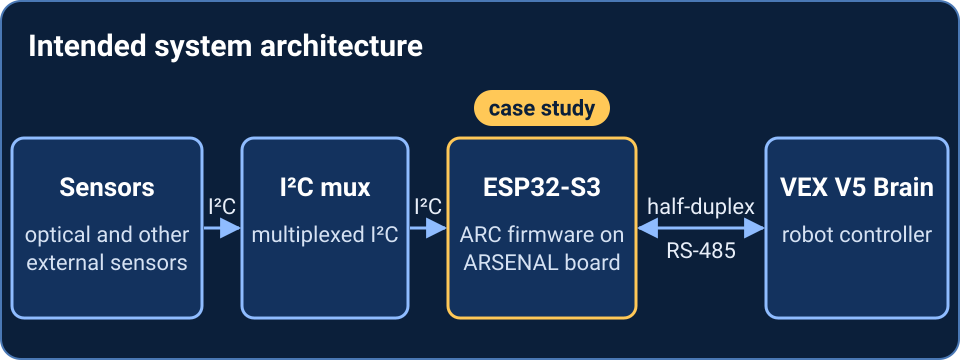

ARC firmware for ARSENAL
I contribute to ARC, the C++ sensor firmware for my robotics team’s custom board. This page covers my part in it, the data path from sensor to V5 Brain, how to write a sensor instance, and what has been checked so far.
No capture yet.
Case study
My role
I'm a firmware contributor on ARC. My commits on the public CPPDev branch start on 2026-09-19 (earlier work from August 2026 is in a separate team repository) and run through 3eb3ed6. The areas below are the ones I worked on there.
- Sensor abstraction. I built
Sensor<N>inARC_Sensor.h: the FreeRTOS task loop (b396134), setup and loop callbacks, appended methods and variables (d350038,ad95894), a non-copyable class with a checked reader and setup (3398b6f), callbacks that take a reference to the sensor (3c0387d), and error handling around thesensor_status_tcodes (cddda79,39eeaaf), which started from a teammate’s status enums, so the first caller gets an accurate status. - I²C ownership. I moved bus handling into
I2CBus<N>(7a6fa87,9f0b6af). The class owns the ESP-IDF master bus, the mux device handles, the sensor registry and the bus mutex. I wrote the first mux channel select,Mux::selectChannel()(007ec83), which becameI2CBus::selectMuxChannel()in9f0b6af, and moved the optical sensor onto thei2c_masterdevice handles (fc116f9).I2CBusInstance.h(934d614) holds the shared mux bus and direct bus, and3c7255fmade its add and remove calls returnesp_err_t: add requires the caller's lock, and remove takes the bus lock itself. - Bus mutex and
LockGuard.LockGuardis a noncopyable RAII wrapper over a FreeRTOS semaphore. In19e7debI made its destructor release the mutex only if that guard actually took it, andisMutexLocked()reports which case you're in. Every register operation and mux select takes aLockGuard&and returns an error when it isn't held, so the channel select and its transaction stay under one lock.b59101eadded error handling for a failed acquire inresetMuxes(). - Optical sensor. I added register reads and writes, offset setting and position decoding (
8b73163,ab0cb74,c2c8812). At3eb3ed6that preconfiguration is not included in the build; the optical preset work is deferred. - RS-485 protocol. I wrote
RS485Comm(ae9c93f) with a byte-wise parse state machine (7f8d0e5), the packet format with timestamps and packed sensor IDs (1d33555,65ec388), checksum and escape-sequence framing, reply packet compilation (8467715) anduart_write_bytesto the V5 (9e42136).3eb3ed6prepared header-based dispatch, with the per-command parsers still stubs. - Diagnostics and error propagation.
RS485Comm::serialStatus()prints the parse state, buffers and sensor IDs (cef105f), building on earlier RS-485 debugging ine85ecbb.I2CBus::confirmStatus()logs each failure with its location throughESP_LOGEand keeps the first error ingetStatus()(f961457). Sensor status is atomic because the comm task can change it, and failed bus or mux operations invalidate the reading so the packet carries0xFFFFinstead of stale data.4dd3cfdfixed the UART config so the build passes with warnings treated as errors. - Pipeline checks.
cef105frecords RS-485 protocol checks across multiple packet formats, per its commit message. The full sensor-to-V5 path is still to be tested on hardware.
Data path
Each hop below is what the code at 3eb3ed6 does. Nothing here has been run end to end on hardware.

- Sensor hardware. Each physical sensor is one
Sensor<N>object. It holds the sensor's I²C address, an optional mux channel and a numeric sensor ID from 1 to 15. Its read callback pulls registers over I²C and stores a three-value reading (Vec3<uint16_t>). - I²C mux.
I2CBus<N>wraps the ESP-IDFi2c_masterdriver, whereNis the number of muxes on the bus.I2CARSENALbuilds two buses:I2CBus<2>for the mux bus andI2CBus<0>for a direct bus, each on its own I²C port.selectMuxChannel()writes a one-bit control byte (1 << channel) to the sensor's mux and writes zero to the other muxes, so one channel is open at a time. Every bus operation takes aLockGuard&and returns an error (ESP_ERR_INVALID_ARGfromI2CBus) if the lock isn't held. The channel select and the sensor transfer therefore happen under one bus mutex. - ESP32-S3 running ARC.
Sensor::setup()registers the sensor on the bus, selects its channel, runs any setup callbacks, registers it with the RS-485 side, then starts a FreeRTOS task pinned to core 1. Each pass of the task loop takes the bus lock, selects the channel and calls the read callback with the lock. Loop callbacks run after the lock is released. The task keeps the latest reading behind a critical section. If a mux select or register read fails, it marks the reading invalid and the sensor's atomic status moves to an I/O error. - Half-duplex RS-485.
RS485Commconfigures UART1 at 115200 baud, 8N1. It usesUART_MODE_RS485_HALF_DUPLEXand passes the enable pin touart_set_pinas the RTS line, so the driver handles transmit/receive direction. A task on core 1 callsuart_read_bytesin 128-byte chunks and feeds each byte toparseByte(), a state machine with the statesWAITING_FOR_HEADER,LENGTH,BODY,FIRST_ESCAPE_SEQUENCE,CHECKSUMandSECOND_ESCAPE_SEQUENCE. - VEX V5 Brain. The Brain sends a request, and ARC answers each valid request with one packet. Framing as implemented, with multi-byte fields big-endian: a header byte whose top six bits are one of six header codes (read, three reset codes, reboot, failure); a 16-bit length counted from the byte after the length field; two 32-bit microsecond timestamps (time since last receive, time sent); an 8-byte block of packed 4-bit sensor IDs; then 6 bytes of data per sensor slot (three 16-bit values). The body is followed by the 32-bit escape value
0xDEADBEEF, a 32-bit checksum (sum of the body bytes mod 256) and the escape value again.compileSentPacket()builds the reply anduart_write_bytessends it. If a requested sensor has no valid reading, its three values go out as0xFFFF.
Status. Commit cef105f says the RS-485 protocol worked for multiple packet formats; that commit message is the only record of that test, and the parser was restructured afterward in 3eb3ed6. Header-based dispatch is only started: extractData() checks for one header code, and the per-command parsers in RS485CommParser.h are stubs that return true. The offset-from-first-packet code in extractData() is commented out. The I²C path is designed but not hardware-tested (3c7255f: “comms still need validation on hardware”). The current app_main starts only RS-485 with an empty sensor registry, so the sensor-to-V5 path has not been exercised on this code.
Writing a sensor instance
You don't have to write a subclass. Sensor<N> is a concrete class template, where N matches the I2CBus<N> it sits on (the number of muxes). It derives from the RS485InterfaceSensor interface (getName, getID, setOffsets, registerSensor, getReadings), which RS485Comm uses to read it. A new sensor is a configuration of Sensor<N> plus one read function.
- Write the read callback. Its type is
void(*)(Sensor<N>&, LockGuard&). It runs inside the sensor's task with the bus lock held and the mux channel already selected. Read registers withreadDeviceRegister()and publish the result withsetReadings(). - Construct the sensor. Pass a name, the bus, the I²C address, an ID from 1 to 15 and the mux channel (
SensorUtils::UNUSED_MUXfor no mux), plus the read callback. Optional setup callbacks, loop callbacks, named methods and named variables go in initializer lists. A bad ID, empty name or missing reader sets the sensor's status to an error. - Register it. Call
setup(). It adds the sensor to the I²C bus, callsregisterSensor()(which callsRS485ARSENAL::addSensor) and starts the task. Registration has to happen beforeRS485Comm::start(), because the registry is locked once the receive task exists. A duplicate ID is rejected.
Read callback:
static void readMySensor(Sensor<2>& s, LockGuard& lock) {
uint8_t raw[6]{};
if (s.readDeviceRegister(SENSOR_DATA_REG, raw, sizeof(raw), lock) != ESP_OK) {
return; // readDeviceRegister already marks the reading invalid
}
Vec3<uint16_t> r{};
r.x = static_cast<uint16_t>(i2cUtils::convertTo16Bits(&raw[0]));
r.y = static_cast<uint16_t>(i2cUtils::convertTo16Bits(&raw[2]));
r.z = static_cast<uint16_t>(i2cUtils::convertTo16Bits(&raw[4]));
s.setReadings(r);
}Bus, sensor and registration (minimal usage, using the constructor signatures at 3eb3ed6):
I2CBus<2> muxBus(BUS_SCL_GPIO, BUS_SDA_GPIO, I2C_NUM_0,
MUX_RESET_GPIO, {MUX_ADDR_A, MUX_ADDR_B});
Sensor<2> mySensor("my_sensor", muxBus, SENSOR_I2C_ADDR, SENSOR_ID,
false, SensorPreconfig::NONE, SENSOR_MUX_CHANNEL,
DEFAULT_PRIORITY, {}, {}, {}, {}, readMySensor);
SensorUtils::sensor_status_t st = mySensor.setup(); // bus add, RS-485 registry, task
if (st != SensorUtils::SENSOR_OK) {
ESP_LOGE("APP", "setup failed: %s", SensorUtils::sensor_status_str(st));
}
// then: RS485ARSENAL::startRS485ARSENAL();The bus must outlive the sensor. As of 3eb3ed6, app_main doesn't build any sensors, and this I²C path hasn't been tested on hardware.
Code: Benjamin-Elmore/ARC on GitHub. The build checked above is the public CPPDev branch at 3eb3ed6. The default main branch is a different revision.